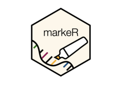

Generate All Possible Unique Contrasts Between Groups
Source:R/GSEA_VariableAssociation.R
generate_all_contrasts.RdThis function creates statistical contrasts between levels of a categorical variable. Users can choose the level of complexity:
"simple": Pairwise comparisons (e.g., A - B)."medium": Pairwise comparisons plus comparisons against the mean of other groups."extensive": All possible groupwise contrasts, ensuring balance in the number of terms on each side.
Examples
if (FALSE) { # \dontrun{
levels <- c("A", "B", "C", "D")
generate_all_contrasts(levels, mode = "simple") # Pairwise only
generate_all_contrasts(levels, mode = "medium") # Pairwise + mean comparisons
generate_all_contrasts(levels, mode = "extensive") # All balanced contrasts
} # }